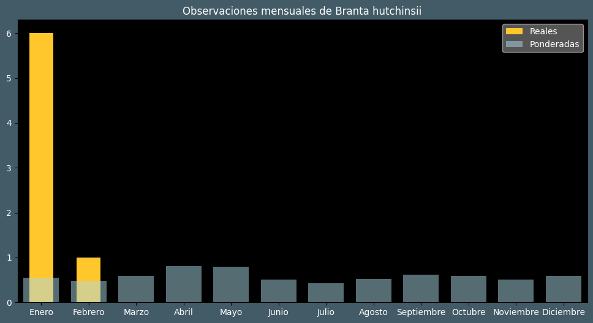

Observaciones por mes
Observations por hora

Categoría IUCN: LC
Género: Branta
Familia: Anatidae
Orden: Anseriformes
Descubrimiento: Richardson (1832)
| Idioma | Nombre |
|---|---|
| Afrikaans (af) | ? |
| Arabic (ar) | ? |
| Belarusian (be) | ? |
| Bulgarian (bg) | Малка канадска гъска |
| Catalan (ca) | Oca de hutchins |
| Chinese (zh) | 小美洲黑雁 |
| Chinese traditional (zh-TW) | 小加拿大雁 |
| Croatian (hr) | Bafinska guska |
| Czech (cs) | Berneška malá |
| Danish (da) | Dværgcanadagås |
| Dutch (nl) | Kleine canadese gans |
| English (en) | Cackling goose |
| Estonian (et) | Eskimo lagle |
| Finnish (fi) | Pikkukanadanhanhi |
| French (fr) | Bernache de hutchins |
| German (de) | Zwergkanadagans |
| Greek (el) | ? |
| Hebrew (he) | ברנטה גוצית |
| Hungarian (hu) | Alaszkai lúd |
| Icelandic (is) | Alaskagæs |
| Indonesian (id) | ? |
| Italian (it) | Oca canadese di hutchins |
| Japanese (ja) | シジュウカラガン |
| Korean (ko) | 캐나다기러기 |
| Latvian (lv) | Bafina zoss |
| Lithuanian (lt) | Šiaurinė kanadinė berniklė |
| Maceodnian (mk) | ? |
| Malayalam (ml) | ? |
| North_sami (se) | ? |
| Norwegian (no) | Polargås |
| Persian (fa) | ? |
| Polish (pl) | Bernikla północna |
| Portuguese (pt) | Ganso-da-tundra |
| Russian (ru) | Малая канадская казарка |
| Serbian (sr) | Mala kanadska guska |
| Slovak (sk) | Bernikla tundrová |
| Spanish (es) | Barnacla canadiense chica |
| Swedish (sv) | Dvärgkanadagås |
| Thai (th) | ? |
| Turkish (tr) | Gıdaklayan kaz |
| Ukrainian (uk) | Казарка мала |